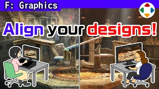
速览
作为工作参与游戏制作，不论自己擅长与否，都要完成各种工作。美术也一样：进同一团队就要对齐同一画风。擅长写实、肌肉发达表现的人，也可能不得不一直画可爱画风。公司内有多个项目时，也许会按擅长类型来安排，但也可能根本没有这种选择。不过大多数情况下美术会灵活地适应——画画和做游戏竞争者都多，要靠技术挺过去。为了让大家笔触一致，常会做概念图（Image Board）：把游戏的背景、世界观、角色、道具等画出来的东西，通常数量不多，由优秀的人带头画。据此建模、深化光照，缩小水平与取向的差异，朝着目标方向推进。他的作品中，马力欧的工装裤画上了牛仔布纹理——这是在写实角色和卡通角色混在一起的《大乱斗》里尽量对齐笔触的结果，没有它就可能变成「动画和真人在打架」的表现（以后再深挖）。游戏机表现力越高，对齐笔触的成本越高，但这是必不可少的，只能努力。很多游戏出了设定资料集，都像图鉴，看着非常开心，甚至是眼福；反过来想到有多少人在缜密地构筑世界，也会觉得可怕。先提出画风概念，再灵活地推进制作——许多游戏就是这样做出来的。
1. 对齐同一画风 0:03
作为工作参与游戏制作，不论自己擅长与否，都要完成各种工作。美术也一样，进了同一团队就要对齐同一画风。
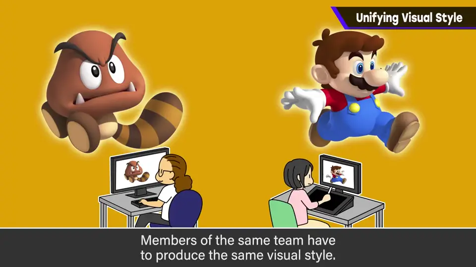
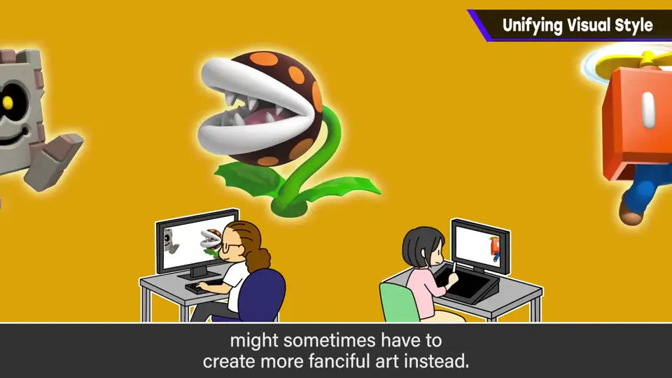
擅长写实、肌肉发达表现的人，也可能不得不一直画可爱的画风。公司内有多个项目时，也许会按擅长的类型安排，但也可能根本没有这种选择。
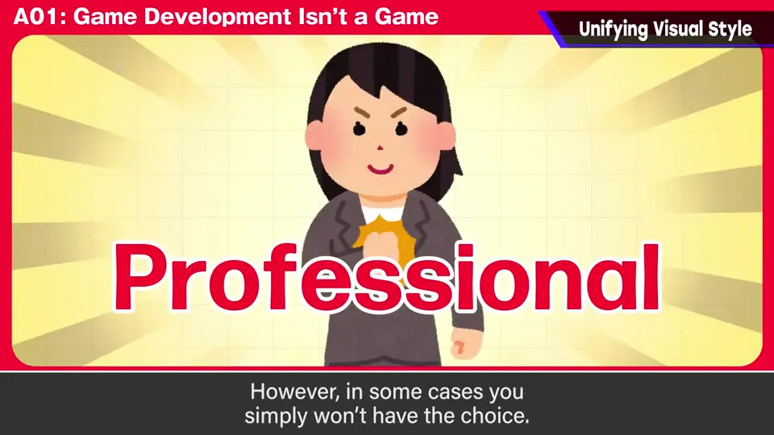
2. 概念图 0:53
为了让大家的笔触一致，常会做「概念图（Image Board）」：把游戏的背景、世界观、角色、道具等画出来的东西。
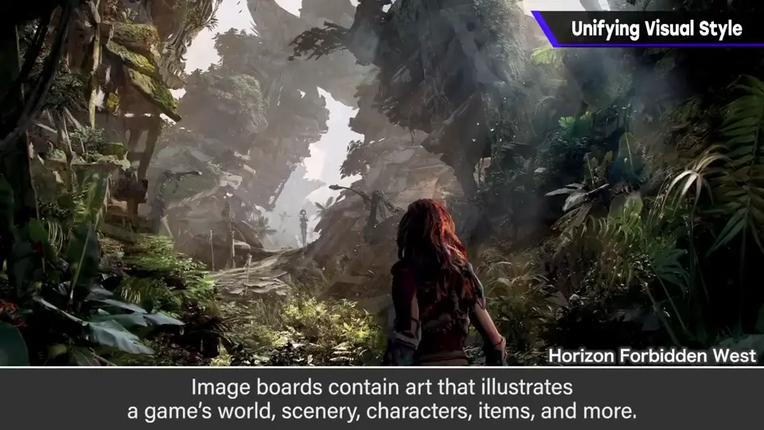
通常数量不多，由优秀的人带头画。据此建模、深化光照，缩小水平与取向的差异，朝应有的方向推进。
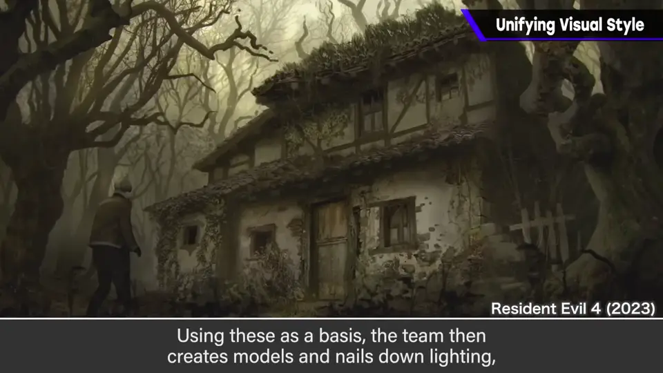
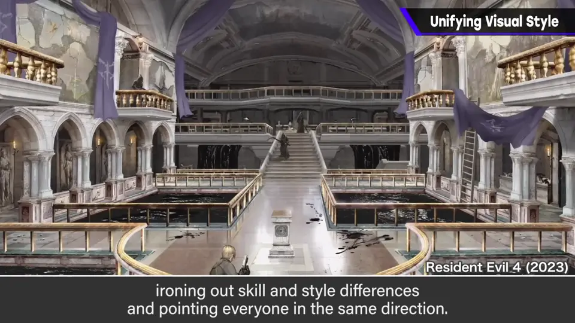
3. 马力欧的牛仔布 1:27
他的作品中，马力欧的工装裤画上了牛仔布纹理。这是在写实角色和卡通角色混在一起的《大乱斗》中，尽量对齐笔触的结果。
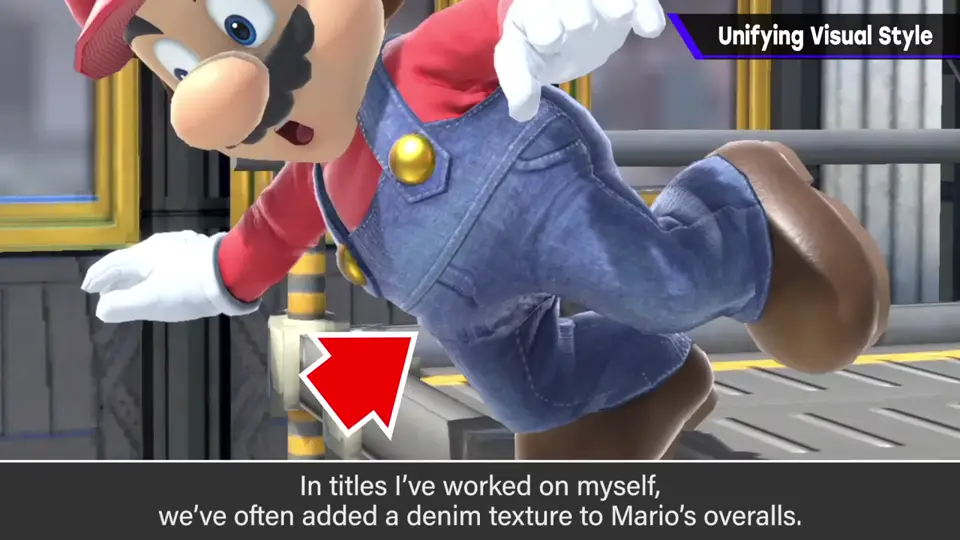
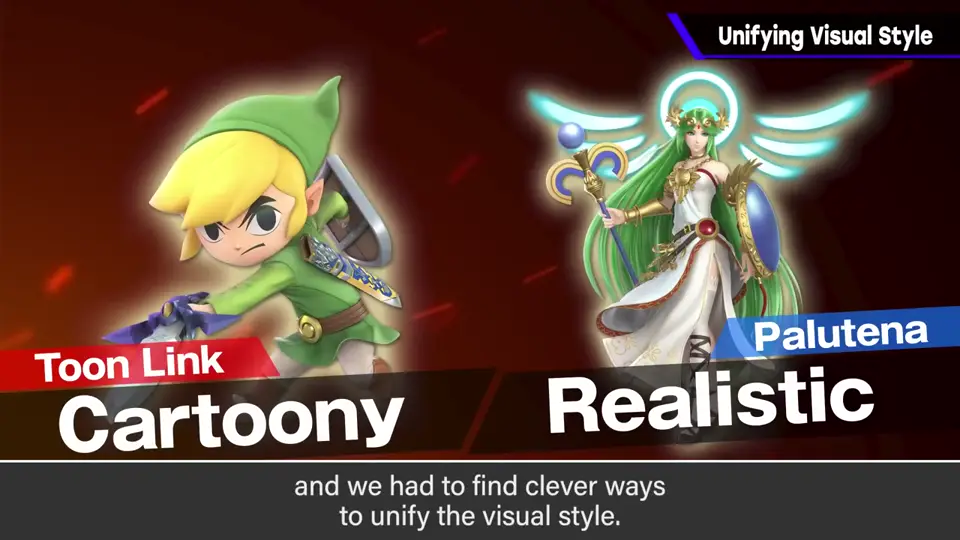
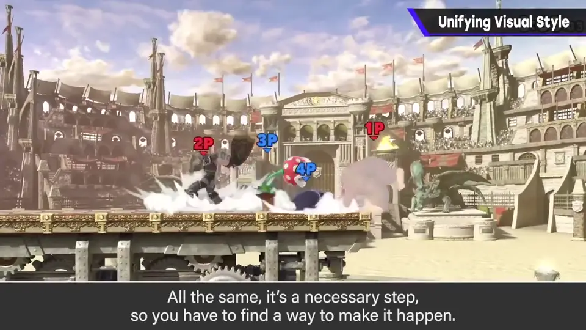
游戏机的表现力越高，对齐笔触的成本就越高。但这是毫无例外地必要的，只能努力。
4. 设定资料集 1:57
很多游戏出了设定资料集，都像图鉴一样，看着非常开心，甚至可以说是眼福。反过来，想到有多少人在缜密地构筑世界，也会觉得可怕。
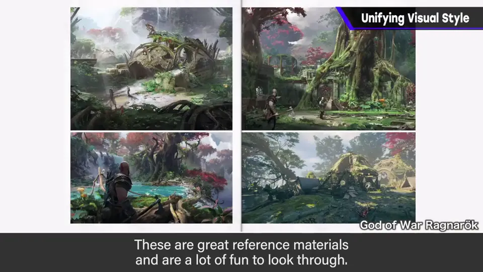
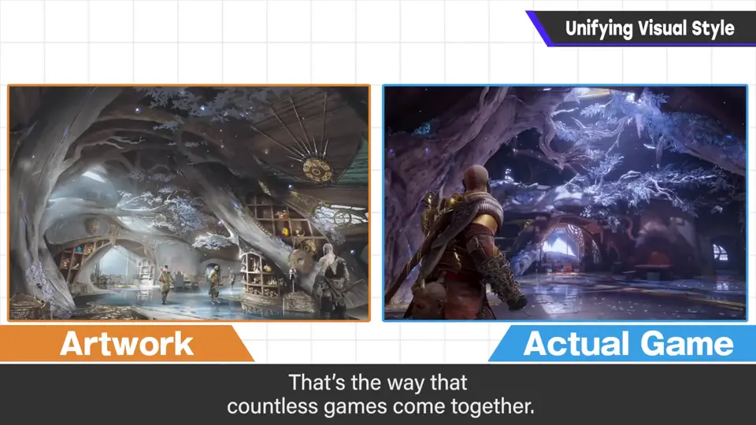
先提出画风概念，再灵活地推进制作——许多游戏就是这样做出来的。
自测题
1. 什么是概念图（Image Board）？由谁来画？
把背景、世界观、角色、道具画出来的图，用于统一笔触；数量不多，由优秀的人带头画。 1:00
2. 《大乱斗》为什么给马力欧的工装裤加牛仔布纹理？
为了在写实与卡通角色混在一起时尽量对齐笔触，避免「动画和真人在打架」。 1:30
3. 为什么硬件机能越高，统一画风越难？
表现越精细，对齐笔触与质感所需的成本就越高。 1:57